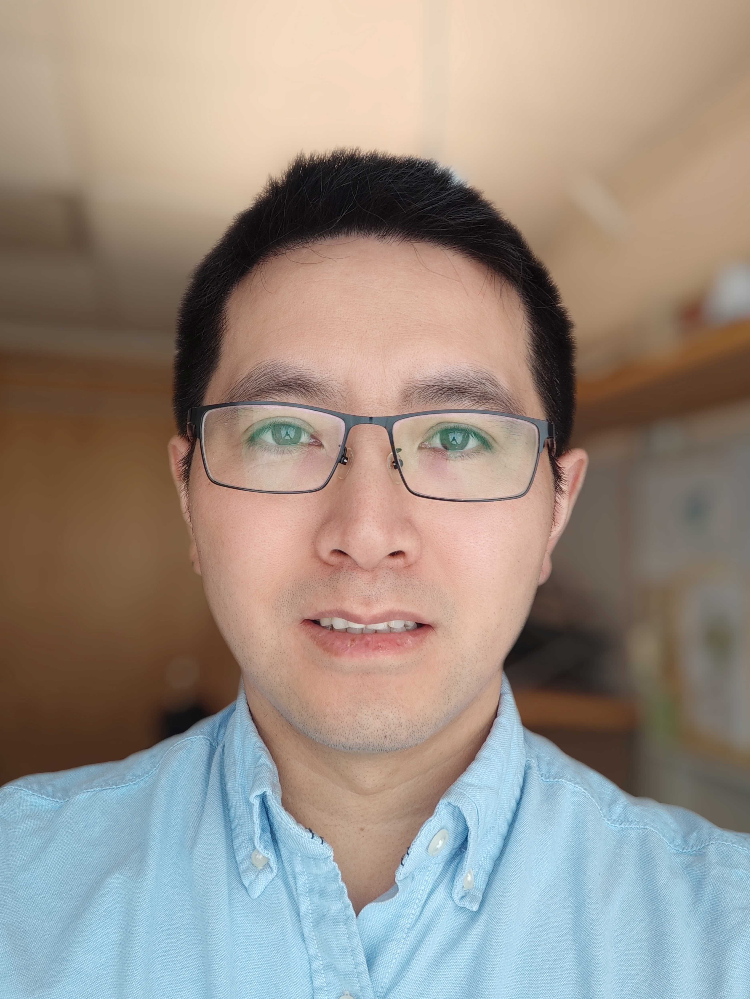

Chao Xu earned his PhD in Materials Chemistry from Stockholm University in 2015 under the supervision of Prof. Niklas Hedin.
Following a brief postdoctoral period in the same group, he joined Uppsala University in 2016 as a postdoctoral researcher under the supervision of Prof. Maria Strømme, and subsequently held a researcher position from 2018.
In 2021, he was appointed as a tenure-track Assistant Professor at Uppsala University and was promoted to Associate Professor in 2025. He obtained his Docent degree in Engineering Science with specialization in Nanotechnology and Functional Materials in 2024.
• King Carl XVI Gustaf’s 50th Birthday Fund for Science, Technology, and the Environment
• Göran Gustafsson Prize (UU/KTH)
Chao Xu has received several research grants from the Swedish Research Council, Formas, the Swedish Energy Agency, Vinnova, STINT, the Göran Gustafsson Foundation, and the ÅForsk Foundation, with a total amount of approximately 25 MSEK as principal investigator.